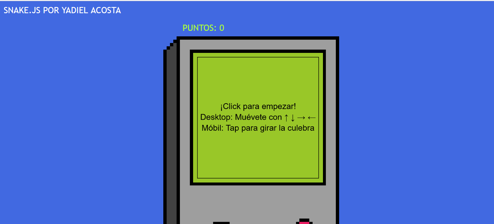

Snake en javascript
Esta es una recreacion del juego clasico de celulares llamado snake que trataba sobre una serpiente que se movia por la pantalla y su objetivo era comerse las manzanas que aparecian en panalla sin chocar.
Esta pagina es un simple proyecto que hice para pasar el rato, demustra ciertos conocimientos en html, css, pixelart, etc; estos conocimientos los he ido ampliando con el tiempo, un ejemplo es este portafolios el cual es hecho desde cero por mi mismo con lenguajes como html, css y javascript mismo que ha sido utilizado para crear esta recreacion del snake en su mayoria.
en el boton mostrado a continuacion esta el juego por si desean probarlo